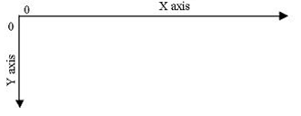

Grid of a Space-Filling Curve (SFC) of recursive
4-partitions of quadrilaterals. This class implements geometry and operations to handle grids.
It is used as complement of the Sfc4q class.
Concepts:
grid of the unit square (canvas box): the mathematical entity used as total area filled by the SFC, is the unit square. It can be transformed into any other quadrilateral, it is a reference canvas geometry. Partitions over unit square produces the grid of blevel. The SFC forms a path conecting centers of the cells of the grid, and SFC distance is used as index to identify the cells of the grid. The set of all blevel grids can be named "hierarchical grid", but sometimes we abbreviate to "grid". Grids of isHalf levels are named "degenerated grids". The unit square with no partition is the primordial cell, a grid of level zero.
box width and box height: the unit square is projected to a real "box", used as canvas of the grid.
sfc4: any SFC object used as reference for level, blevel, key, bkey, id0, id and its labels and operations, mainly decode/encode to IJ coordinates. Typical objects are instances of the GSfc4qLbl class extensions to concrete curves, like GSfc4qLbl_Morton or GSfc4qLbl_Hilbert classes.
(i,j) coordinates, or "integer XY grid": see grid of the "blind structure". 
“i” and “j” are integers in the range [0,2^blevel-1]. IJ=(0,0) in the top-left corner.
“i” scan columns from left to right, “j” scan lines from top to bottom.
Concepts implemented by the Sfc4q class: level, blevel, key, bkey, IJ coordinates, (i,j).